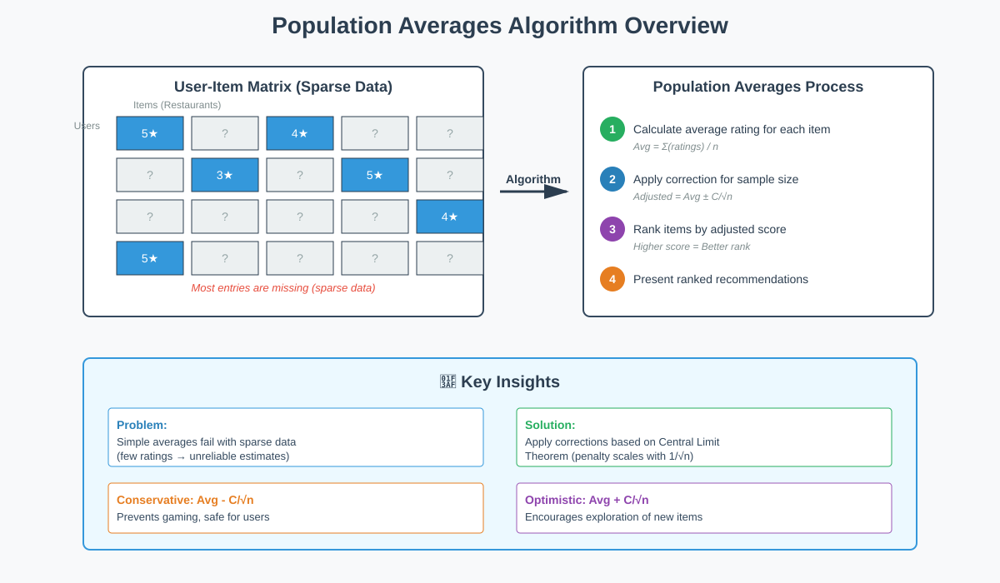
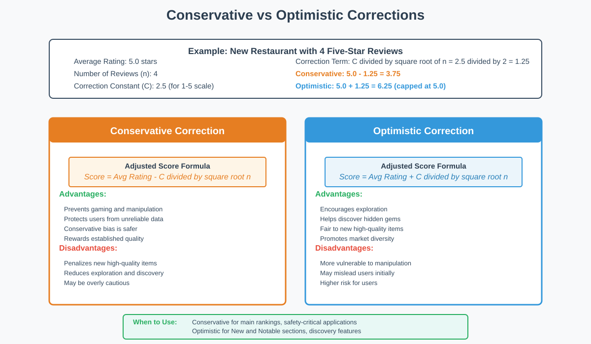
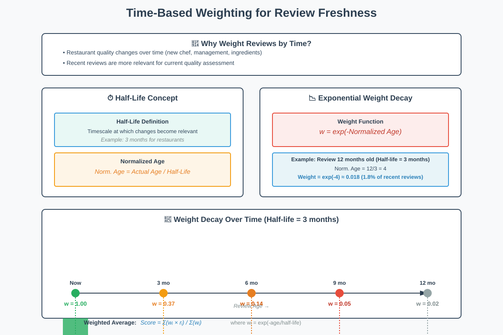

Population Averages Algorithm for Recommendation Systems
📋 Quick Navigation
- Introduction
- The Recommendation Problem
- Population Averages Algorithm
- Law of Large Numbers
- Central Limit Theorem and Corrections
- Conservative vs Optimistic Corrections
- Time-Based Weighting
- Implementation Summary
- Mathematical Formulas
- References & Further Reading
🎯 Introduction
The Population Averages Algorithm represents one of the simplest yet most effective approaches to building recommendation systems. This algorithm addresses the fundamental challenge of ranking items (such as restaurants, movies, or products) when different items have varying amounts of user feedback.
Key Application Areas:
- Restaurant Recommendations: Yelp, Google Maps, TripAdvisor
- Product Recommendations: Amazon, eBay ratings
- Content Recommendations: Netflix, YouTube ratings
- Service Reviews: Uber, Airbnb ratings

Core Challenge:
The algorithm tackles the problem of sparse data where most entries in a user-item matrix are missing. For example, each customer visits only a small fraction of restaurants in their city, creating an incomplete dataset that requires intelligent filling strategies.
🔍 The Recommendation Problem
Problem Definition
In its simplest form, recommendation systems aim to fill in missing entries in a data matrix. This matrix can be visualized as an Excel spreadsheet where:
Matrix Structure:
- Rows: Represent users/customers
- Columns: Represent items (restaurants, movies, products)
- Cells: Contain ratings or interactions
- Missing Data: Majority of cells are empty (sparse matrix)
Real-World Examples
Yelp Restaurant Scenario:
- User searches for "American cuisine, expensive, Boston"
- Hundreds of restaurants match the criteria
- How do we rank these restaurants?
- Simple proximity or price isn't sufficient
- Need intelligent rating-based ordering
The Data Sparsity Problem:
If we randomly select a cell in the user-item matrix, it will most likely be empty because each user interacts with only a tiny fraction of available items.
📊 Population Averages Algorithm
Basic Approach
The simplest structure assumes the entire population thinks alike. While this is a strong assumption, it provides an excellent starting point for recommendation systems.
Algorithm Steps:
- Calculate Average Rating: For each restaurant, compute the average of all ratings it has received
- Rank by Score: Order restaurants from highest to lowest average rating
- Fill Missing Values: Use column averages to predict unobserved user preferences
Simple Example
Consider a restaurant with the following ratings:
Ratings: [5, 4, 5, 3, 4]
Average Score = (5 + 4 + 5 + 3 + 4) / 5 = 4.2
This average score becomes the restaurant's ranking metric.
Implementation Advantages
Technical Benefits:
- SQL Compatibility: Easy to implement using native SQL databases
- Scalability: Efficient computation even with large datasets
- Simplicity: Straightforward to understand and maintain
- Real-time Updates: Can be recalculated quickly as new ratings arrive
📈 Law of Large Numbers
Coin Flip Analogy
To understand when averages work well, consider estimating the bias of a coin:
Experimental Setup:
- Flip a coin multiple times
- Assign score: Head = 1, Tail = 0
- Estimate bias: (Number of Heads) / (Total Flips)
Key Insight:
As the number of coin flips increases, the measured score becomes arbitrarily close to the true probability of seeing heads. This is the Law of Large Numbers.
Application to Restaurant Ratings
When Averages Work Well:
- Large number of ratings available
- Each rating is an independent observation
- True quality can be estimated by the sample mean
When Averages Fail:
- Very few ratings (newly opened restaurant)
- Sample size too small for reliable estimation
- Need for correction mechanisms
Problem Scenario:
A new restaurant receives only 1 rating of 5 stars. Should we rank it as the best restaurant? No! The sample size is too small for reliable inference.
🎲 Central Limit Theorem and Corrections
The Central Limit Theorem
The Central Limit Theorem provides the theoretical foundation for correcting average-based estimates when sample sizes are limited.
Normalized Error Distribution:
The normalized error in our estimate follows a Gaussian (Normal) distribution:
Normalized Error = (Estimated Score - True Score) / √(Number of Observations)
This distribution has:
- Mean: Zero
- Distribution: Gaussian/Normal
- Named after: Karl Friedrich Gauss (1777-1855), "Princeps mathematicorum"

Error Magnitude
The variation in estimation depends on the true score:
Error = √(True Score × (1 - True Score))
Key Observations:
- Extreme Scores (0 or 1): Error is zero (one observation is sufficient)
- Middle Scores (0.5): Error is largest (maximum uncertainty)
- Conservative Approach: Assume worst-case scenario (true score ≈ 0.5)
Worst-Case Error Estimate
Maximum Error ≈ 0.5 / √(Number of Observations)
This formula provides the basis for our correction term.
Conservative Correction Formula
To account for uncertainty with limited data:
Adjusted Score = Average Rating - Constant / √(Number of Reviews)
For Yelp (ratings 1-5):
- Constant C = 2.5 (midpoint of rating scale)
- Restaurants with fewer reviews get larger downward adjustments
- Prevents new restaurants with few 5-star ratings from dominating rankings
Example Calculation:
New restaurant with 4 reviews, all 5 stars:
Adjusted Score = 5 - 2.5/√4 = 5 - 2.5/2 = 5 - 1.25 = 3.75
This adjusted score of 3.75 prevents the restaurant from unfairly ranking above established restaurants with many 4-star reviews.
⚖️ Conservative vs Optimistic Corrections
The Exploration-Exploitation Trade-off
Conservative Correction Problem:
While conservative corrections prevent gaming the system, they can be too harsh on genuinely excellent new establishments.
Scenario:
A brilliant but lesser-known chef opens a new restaurant. Everyone who visits raves about it. In a few weeks, it gets 4 genuine five-star reviews.
Conservative Score = 5 - 2.5/√4 = 3.75
This score may be too low, preventing the restaurant from being discovered by new customers.

Optimistic Correction
To encourage exploration of potentially excellent new options:
Adjusted Score = Average Rating + Constant / √(Number of Reviews)
Key Difference:
- Conservative: Subtracts correction (safer, prevents false positives)
- Optimistic: Adds correction (encourages discovery, accepts some risk)
Use Cases:
- Conservative Correction: Default ranking, established businesses
- Optimistic Correction: "New and Notable" sections, discovery features
- Hybrid Approaches: Different corrections for different user segments
Strategic Implications
For Platform Design:
- Balance between fairness to new businesses and user safety
- Consider user preferences (risk-seeking vs risk-averse)
- May want different algorithms for different contexts
Long-term Dynamics:
Over time, quality restaurants naturally rise as they accumulate reviews, making the correction term smaller and smaller.
⏰ Time-Based Weighting
The Freshness Problem
Restaurant quality changes over time due to:
- Staff Changes: New chef, different management
- Quality Drift: Ingredients, service standards
- Seasonal Variations: Menu changes, consistency issues
Solution: Weight recent ratings more heavily than older ratings.
Half-Life Concept
Borrowed from nuclear physics, the half-life represents the timescale at which changes become relevant.
Example for Restaurants:
- Half-life: 3 months
- Reviews older than 3 months have exponentially decreasing weight
Normalized Age Calculation
Normalized Age = Actual Age of Review / Half-Life
For a review 12 months old:
Normalized Age = 12 months / 3 months = 4
Weight Function
Weight = exp(-Normalized Age)
Example:
For a review 12 months old (normalized age = 4):
Weight = exp(-4) ≈ 0.018
This review has only 1.8% of the weight of a current review.

Weighted Average Formula
Weighted Average = Σ(Weight_i × Rating_i) / Σ(Weight_i)
Where:
- Weight_i = exp(-Age_i / Half-Life)
- Rating_i = Individual rating
- Sum over all reviews
Correction for Weighted Averages
The correction term also needs adjustment:
Correction = Constant / √(Σ Weights / Max Weight)
This accounts for the effective sample size after weighting.
Key Insight:
When all weights were uniform (equal to 1), the correction was simply √n. With variable weights, we need to account for the effective number of observations.
🛠️ Implementation Summary
Complete Algorithm
Step 1: Calculate Base Score
For each restaurant, compute weighted average:
Base Score = Σ(w_i × r_i) / Σ(w_i)
where:
w_i = exp(-age_i / half_life)
r_i = individual rating
Step 2: Apply Correction
Choose correction type based on application:
Conservative: Adjusted Score = Base Score - C / √(effective_n)
Optimistic: Adjusted Score = Base Score + C / √(effective_n)
where:
C = constant (e.g., 2.5 for 1-5 rating scale)
effective_n = Σ(w_i) / max(w_i)
Step 3: Rank Items
Sort all items by adjusted score in descending order.
Parameter Selection Guide
Constant C:
- For 1-5 rating scale: C = 2.5 (midpoint)
- For 1-10 rating scale: C = 5.5
- For binary (like/dislike): C = 0.5
Half-Life Selection:
- Fast-changing items: Shorter half-life (1-3 months for restaurants)
- Stable items: Longer half-life (6-12 months for books)
- Static items: No time weighting needed (historical monuments)
Correction Type:
- Main listings: Conservative correction
- Discovery features: Optimistic correction
- Personalized recommendations: May vary by user risk preference
Practical Considerations
Database Implementation:
SELECT
restaurant_id,
restaurant_name,
AVG(rating) - 2.5/SQRT(COUNT(*)) as adjusted_score
FROM reviews
WHERE review_date > DATE_SUB(NOW(), INTERVAL 12 MONTH)
GROUP BY restaurant_id
ORDER BY adjusted_score DESC
Real-time Updates:
- Precompute scores periodically (e.g., hourly)
- Cache results for fast retrieval
- Update incrementally as new ratings arrive
📐 Mathematical Formulas
Core Formulas Reference
1. Simple Average (Unweighted):
Average Score = (r₁ + r₂ + ... + rₙ) / n
2. Conservative Adjustment:
Adjusted Score = Average Rating - C / √n
where:
C = constant (rating scale midpoint)
n = number of reviews
3. Optimistic Adjustment:
Adjusted Score = Average Rating + C / √n
4. Normalized Age:
Normalized Age = Actual Age / Half-Life
5. Exponential Weight:
w = exp(-Normalized Age)
6. Weighted Average:
Weighted Average = Σ(wᵢ × rᵢ) / Σ(wᵢ)
7. Effective Sample Size:
n_effective = Σ(wᵢ) / max(wᵢ)
8. Weighted Correction:
Correction = C / √(n_effective)
9. Central Limit Theorem Error:
Error ≈ √(p × (1-p)) / √n
where:
p = true probability
n = number of observations
10. Confidence Interval:
True Score ∈ [Estimated Score - C/√n, Estimated Score + C/√n]
Variable Definitions
Common Variables:
- r or rᵢ: Individual rating value
- n: Number of reviews/observations
- C: Constant correction term
- w or wᵢ: Weight for individual review
- p: True probability/score
- μ: Population mean
- σ: Standard deviation
📚 References & Further Reading
Academic Papers
Recommendation Systems:
- Ricci, F., Rokach, L., & Shapira, B. (2015). Recommender Systems Handbook. Springer. DOI: 10.1007/978-1-4899-7637-6
- Adomavicius, G., & Tuzhilin, A. (2005). "Toward the next generation of recommender systems: A survey of the state-of-the-art and possible extensions." IEEE Transactions on Knowledge and Data Engineering, 17(6), 734-749.
Statistical Foundations
Central Limit Theorem:
- Rice, J. A. (2006). Mathematical Statistics and Data Analysis (3rd ed.). Duxbury Press.
- Casella, G., & Berger, R. L. (2002). Statistical Inference (2nd ed.). Duxbury Press.
Industry Applications
Online Platforms:
- Yelp Engineering Blog: https://engineeringblog.yelp.com/
- Netflix Tech Blog: https://netflixtechblog.com/
- Amazon Science: https://www.amazon.science/tag/recommendations
Practical Guides
Implementation Resources:
- Surprise Library Documentation: Collaborative filtering for Python - http://surpriselib.com/
- TensorFlow Recommenders: https://www.tensorflow.org/recommenders
Online Courses
Recommended Learning:
- Stanford CS246: Mining Massive Datasets - http://web.stanford.edu/class/cs246/
- University of Minnesota: Recommender Systems Specialization (Coursera)
Related Topics
Advanced Techniques:
- Collaborative Filtering
- Matrix Factorization
- Deep Learning for Recommendations
- Multi-Armed Bandit Algorithms
- Thompson Sampling
Document Information:
- Version: 1.0
- Last Updated: October 2025
- Topic: Population Averages Algorithm for Recommendation Systems
- Difficulty Level: Intermediate
- Prerequisites: Basic probability, statistics, and linear algebra
🎓 Learning Path:
After mastering Population Averages, explore:
- Collaborative Filtering Methods
- Content-Based Filtering
- Hybrid Recommendation Approaches
- Deep Learning Recommender Systems
This documentation is designed for AI learners, engineers, and researchers building recommendation systems.